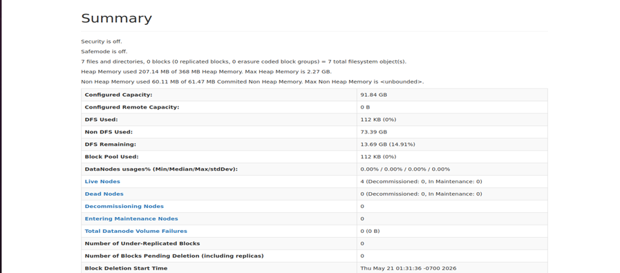
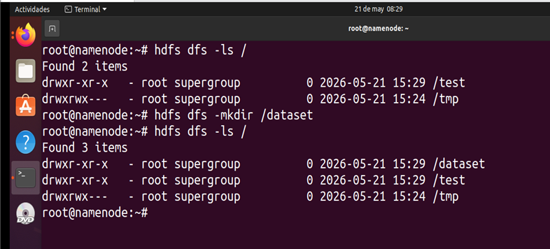
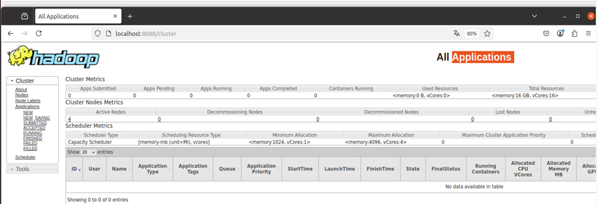

Capítulo 4. Arquitectura de Contenedores para el Despliegue del Entorno Big Data
Arquitectura de Contenedores para el Despliegue del Entorno Big Data
Arquitectura de Contenedores para el Despliegue del Entorno Big Data
Una vez desplegada la infraestructura Big Data, todos los componentes del ecosistema Hadoop ofrecen interfaces web que permiten administrar y supervisar el estado del clúster de forma centralizada.
Estas aplicaciones facilitan la monitorización del sistema de archivos HDFS, la gestión de recursos mediante YARN y el seguimiento de los trabajos MapReduce, proporcionando una visión completa del funcionamiento del entorno distribuido desarrollado en este proyecto.
El NameNode incorpora una interfaz web desde la que es posible consultar el estado del sistema HDFS, visualizar los DataNodes registrados, comprobar la ocupación del almacenamiento y analizar la distribución de los bloques de datos.
http://localhost:9870/
http://namenode:9870/

Figura 27. Interfaz web del NameNode.
Además de la interfaz gráfica, HDFS puede administrarse mediante comandos ejecutados desde la consola del NameNode.
hdfs dfs -ls /
hdfs dfs -mkdir /dataset

Figura 28. Administración básica del sistema HDFS.
YARN dispone igualmente de una interfaz web que permite supervisar la gestión de recursos del clúster y controlar la ejecución de las aplicaciones MapReduce.
http://localhost:8088/cluster
http://yarnmanager:8088/cluster

Figura 29. Interfaz web del ResourceManager.
Una vez desplegado el entorno distribuido, las interfaces web de Hadoop permiten supervisar de forma sencilla el funcionamiento del clúster, verificar el estado de HDFS y controlar la ejecución de los trabajos MapReduce mediante YARN.
Con esta infraestructura completamente operativa, el estudiante dispone ya de un entorno Big Data funcional preparado para desarrollar, ejecutar y analizar programas MapReduce sobre un clúster Hadoop distribuido.